This article takes one model, Poisson counts with a covariate and an areal spatial field, and runs it through each diagnostic tulpa provides: the one-call panel, the simulation-based residual tests, residual checks for spatial and temporal structure, sampler convergence, the reliability of the deterministic approximation, model comparison and prior sensitivity. The data are simulated with known parameters, and a second response drawn from an overdispersed distribution is fitted with the same Poisson model, so every test is shown once passing and once failing. It ends with a checklist to follow on your own fits. The model itself is introduced in Spatial models; the posterior predictive and diagnostic plots use the suggested packages ggplot2, bayesplot and patchwork.
Installation is covered in Get started.
The example model
Each observation is a count taken in one of regions laid out as a 6 by 6 grid. Its mean depends on a covariate and on the region it was taken in:
where is the intercept, the covariate slope and the effect of region . The field carries an intrinsic conditional autoregressive (ICAR) prior: each is centred on the mean of its grid neighbours, with a precision the fit integrates over. The misspecified twin draws its counts from a negative binomial distribution with the same mean and size , so that
exceeds the Poisson variance at every observation. Fitting it as Poisson is the error the residual tests below are meant to catch.
Build the grid adjacency first: two regions are neighbours when they share an edge.
side <- 6L
K <- side^2
cells <- expand.grid(col = 1:side, row = 1:side)
dmat <- abs(outer(cells$col, cells$col, "-")) +
abs(outer(cells$row, cells$row, "-"))
W <- (dmat == 1) * 1The true field is a smooth surface over the grid, scaled to a standard deviation of 0.6 on the log scale. The intercept is 0.5 and the slope 0.4. Six hundred observations are spread at random over the regions, and each carries a survey year from 1 to 10 that has no effect on the counts; the year is there for the temporal check.
set.seed(1)
field_true <- 0.6 * as.numeric(scale(sin(cells$col / 2) +
cos(cells$row / 2)))
n <- 600
region <- sample(1:K, n, replace = TRUE)
x <- rnorm(n)
year <- sample(1:10, n, replace = TRUE)
mu <- exp(0.5 + 0.4 * x + field_true[region])
y <- rpois(n, mu)
y_od <- rnbinom(n, mu = mu, size = 1.5)
d <- data.frame(y = y, y_od = y_od, x = x, region = factor(region),
year = year, cx = cells$col[region], cy = cells$row[region])d holds both responses (y Poisson,
y_od overdispersed), the covariate, the region factor, the
year and the grid coordinates cx, cy of each
observation’s region. Fit both responses with the same Poisson ICAR
model on the nested-Laplace path.
sp <- list(type = "icar", adjacency = W)
ctl <- list(n_threads = 2)
fit <- tulpa(y ~ x + spatial(region), data = d, family = "poisson",
spatial = sp, mode = "nested_laplace", control = ctl)
#> [nested-laplace] 1/9 cells (11%) | elapsed 0s | ETA >=0s | 0.00s/cells
#> [nested-laplace] 5/5 cells (100%) | elapsed 0s | ETA done | 0.00s/cells
fit_od <- tulpa(y_od ~ x + spatial(region), data = d, family = "poisson",
spatial = sp, mode = "nested_laplace", control = ctl)
#> [nested-laplace] 1/9 cells (11%) | elapsed 0s | ETA >=0s | 0.00s/cells
#> [nested-laplace] 5/5 cells (100%) | elapsed 0s | ETA done | 0.00s/cells
rbind(correct = coef(fit), misspecified = coef(fit_od))
#> (Intercept) x
#> correct 0.5294855 0.4036127
#> misspecified 0.5989578 0.4345329The slope reads 0.40 on the Poisson data and 0.43 on the overdispersed data, both near the true 0.4, so the two fits are told apart by the diagnostics below.
The diagnostic panel
check_model() draws four panels from one call. It
simulates nsim replicate datasets from the fit with
simulate(), which draws the field along with the counts,
and compares the observed response with them:
- The QQ panel plots the probability integral transform (PIT) residuals against the uniform distribution, with a Kolmogorov-Smirnov p-value.
- The residuals-versus-fitted panel plots Pearson residuals against fitted means, with a lowess smoother.
- The dispersion panel shows the variance of each simulated dataset, with the observed variance as a red line.
- The correlogram, drawn when
coordsis given, plots Moran’s I of the Pearson residuals for 3 to 20 nearest neighbours.
The PIT residual of an observation is its quantile within the simulated values at that observation, randomised between the two neighbouring quantiles for a count. Under the fitted model it is uniform on (0, 1). The panel also returns its headline numbers invisibly.
coords <- as.matrix(d[, c("cx", "cy")])
cm <- check_model(fit, coords = coords, nsim = 250)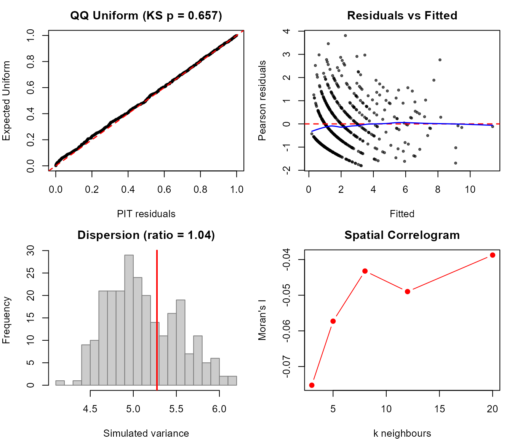
cm_od <- check_model(fit_od, coords = coords, nsim = 250)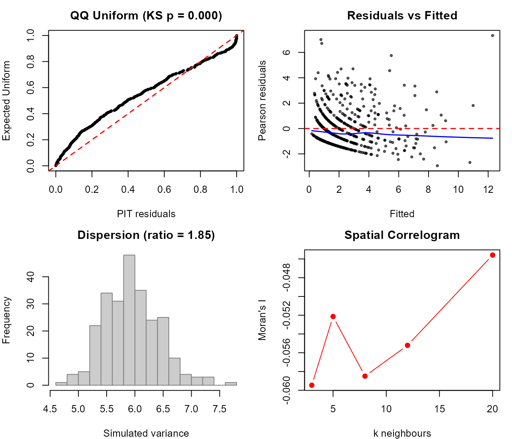
rbind(correct = unlist(cm[c("ks_p", "disp_ratio")]),
misspecified = unlist(cm_od[c("ks_p", "disp_ratio")]))
#> ks_p disp_ratio
#> correct 6.568746e-01 1.043197
#> misspecified 1.654764e-08 1.848630On the correct fit the PIT points lie on the diagonal
(Kolmogorov-Smirnov p = 0.69) and the observed variance sits inside the
simulated ones, at 1.04 times their median. On the misspecified fit the
QQ plot bends away from the diagonal (p = 2.6e-08), and the observed
variance, 1.86 times the simulated median, falls beyond the right edge
of the histogram, so its red line is not drawn. The correlogram reads
Moran’s I between -0.075 and -0.04 on the correct fit: it is built from
residuals(), which include the fitted field (see Spatial and temporal
structure).
check_model() is the panel for the observation model.
Two other one-call doors cover the inference itself:
diagnostics() returns Rhat and effective sample sizes for a
chain fit and the approximation-reliability table for a deterministic
one, and plot_diagnostics() draws the convergence panel of
a chain fit. Both appear in their own sections below.
Simulation-based residual tests
Each panel has a test behind it, and each test returns an
htest object with a statistic and a p-value. All of them
simulate from the fit, so they take nsim and
seed; the defaults are 250 replicates and seed 123.
PIT residuals and uniformity
pit_residuals() returns one PIT residual per
observation. A histogram of a correct fit’s residuals is flat;
overdispersion piles residuals at both ends, because the observed counts
are more extreme than the Poisson replicates allow.
pit <- pit_residuals(fit)
pit_od <- pit_residuals(fit_od)
op <- par(mfrow = c(1, 2))
hist(pit, breaks = 20, main = "Poisson data", xlab = "PIT residual")
hist(pit_od, breaks = 20, main = "Overdispersed data", xlab = "PIT residual")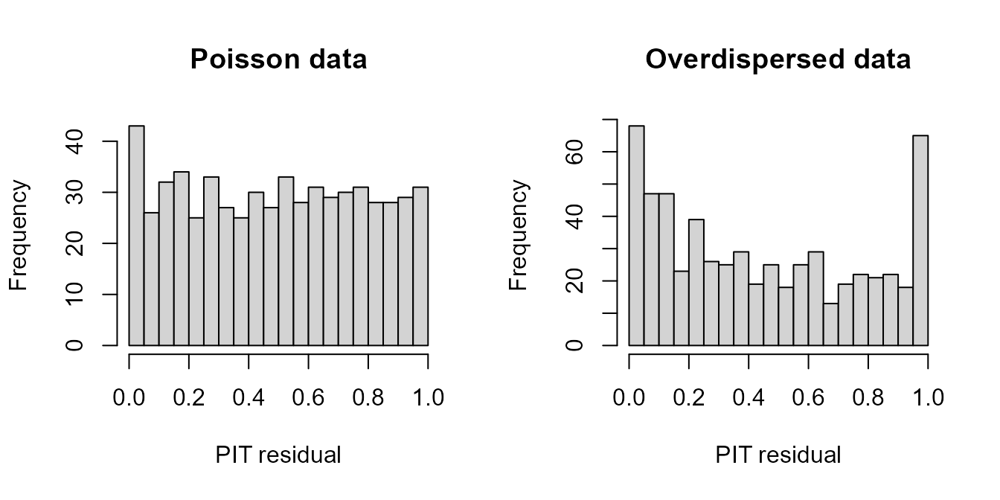
par(op)test_uniformity() applies the Kolmogorov-Smirnov test of
the PIT residuals against the uniform distribution.
test_uniformity(fit)
#>
#> Asymptotic one-sample Kolmogorov-Smirnov test
#>
#> data: r
#> D = 0.029899, p-value = 0.6569
#> alternative hypothesis: two-sided
test_uniformity(fit_od)
#>
#> Asymptotic one-sample Kolmogorov-Smirnov test
#>
#> data: r
#> D = 0.12453, p-value = 1.655e-08
#> alternative hypothesis: two-sidedThe largest gap between the empirical and the uniform distribution
function, D, is 0.029 on the correct fit and 0.123 on the
misspecified one; only the second is far outside what 600 uniform draws
produce.
Dispersion
test_dispersion() divides the variance of the observed
response by the median variance of the simulated datasets. A ratio above
1 is overdispersion, below 1 underdispersion.
test_dispersion(fit)
#>
#> Simulation-based dispersion test
#>
#> data: fit
#> dispersion ratio = 1.0432, p-value = 0.664
#> alternative hypothesis: two.sided
test_dispersion(fit_od)
#>
#> Simulation-based dispersion test
#>
#> data: fit_od
#> dispersion ratio = 1.8486, p-value < 2.2e-16
#> alternative hypothesis: two.sidedThe Poisson data give a ratio of 1.04 (p = 0.58), the overdispersed data 1.86 (p below 2.2e-16). The same comparison as a plot: simulate from the misspecified fit and place the observed variance among the simulated ones.
sims_od <- as.matrix(simulate(fit_od, nsim = 250, seed = 1))
v_sim <- apply(sims_od, 2, var)
hist(v_sim, breaks = 20, xlim = range(v_sim, var(d$y_od)),
main = "", xlab = "variance of a simulated dataset")
abline(v = var(d$y_od), col = "red", lwd = 2)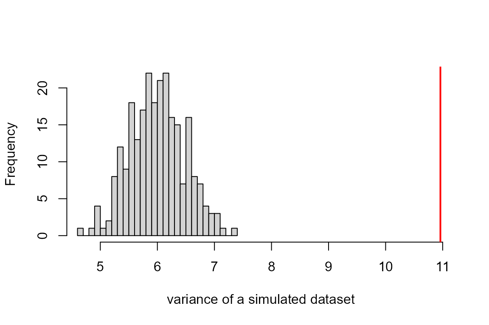
Outliers
test_outliers() counts the observations that fall
outside the range of all simulated values at that observation. Under a
correct model about
of them do, about 5 of 600 at 250 replicates, and the test is a binomial
test against that rate.
test_outliers(fit)
#>
#> Simulation outlier test (1/600 outside envelope)
#>
#> data: n_outliers and N
#> number of successes = 1, number of trials = 600, p-value = 0.9918
#> alternative hypothesis: true probability of success is greater than 0.007968127
#> 95 percent confidence interval:
#> 8.548517e-05 1.000000e+00
#> sample estimates:
#> probability of success
#> 0.001666667
test_outliers(fit_od)
#>
#> Simulation outlier test (13/600 outside envelope)
#>
#> data: n_outliers and N
#> number of successes = 13, number of trials = 600, p-value = 0.001302
#> alternative hypothesis: true probability of success is greater than 0.007968127
#> 95 percent confidence interval:
#> 0.01286238 1.00000000
#> sample estimates:
#> probability of success
#> 0.02166667One of 600 Poisson counts falls outside its simulated range, against 15 of 600 overdispersed counts (p = 0.00013).
The plot sorts the observations by their simulated median and draws the simulated range around each; observed counts outside it are marked in red.
lo <- apply(sims_od, 1, min)
hi <- apply(sims_od, 1, max)
ord <- order(apply(sims_od, 1, median))
out <- d$y_od < lo | d$y_od > hi
plot(seq_len(n), d$y_od[ord], pch = 19, cex = 0.4,
col = ifelse(out[ord], "red", "grey40"),
xlab = "observation (sorted by simulated median)", ylab = "count")
segments(seq_len(n), lo[ord], seq_len(n), hi[ord],
col = adjustcolor("steelblue", 0.3))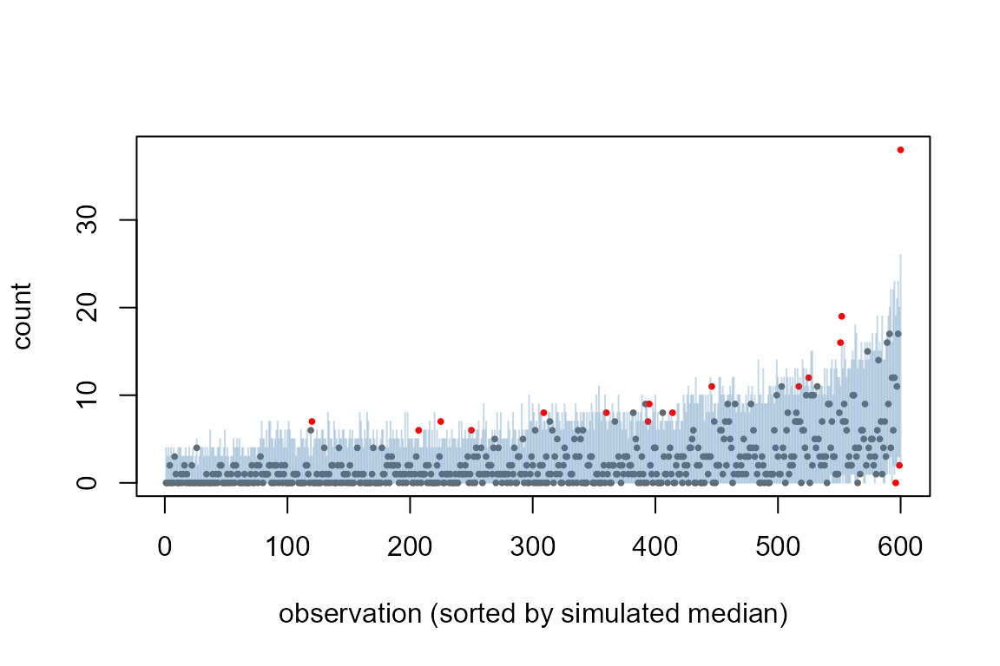
Zero inflation
test_zero_inflation() compares the observed number of
zeros with the number expected under the fit. A negative binomial with a
small size puts more mass at zero than a Poisson with the same mean, so
the overdispersed data also read as zero-inflated against the Poisson
fit.
test_zero_inflation(fit)
#>
#> Simulation-based zero-inflation test
#>
#> data: fit
#> zero-inflation ratio = 1.1189, observed zeros = 160, expected zeros =
#> 143, p-value = 0.048
#> alternative hypothesis: two.sided
test_zero_inflation(fit_od)
#>
#> Simulation-based zero-inflation test
#>
#> data: fit_od
#> zero-inflation ratio = 1.4632, observed zeros = 199, expected zeros =
#> 136, p-value < 2.2e-16
#> alternative hypothesis: two.sidedThe Poisson data have 160 zeros against 142 expected (p = 0.10), the overdispersed data 199 against 137.
z_sim <- colSums(sims_od == 0)
hist(z_sim, breaks = 20, xlim = range(z_sim, sum(d$y_od == 0)),
main = "", xlab = "zeros in a simulated dataset")
abline(v = sum(d$y_od == 0), col = "red", lwd = 2)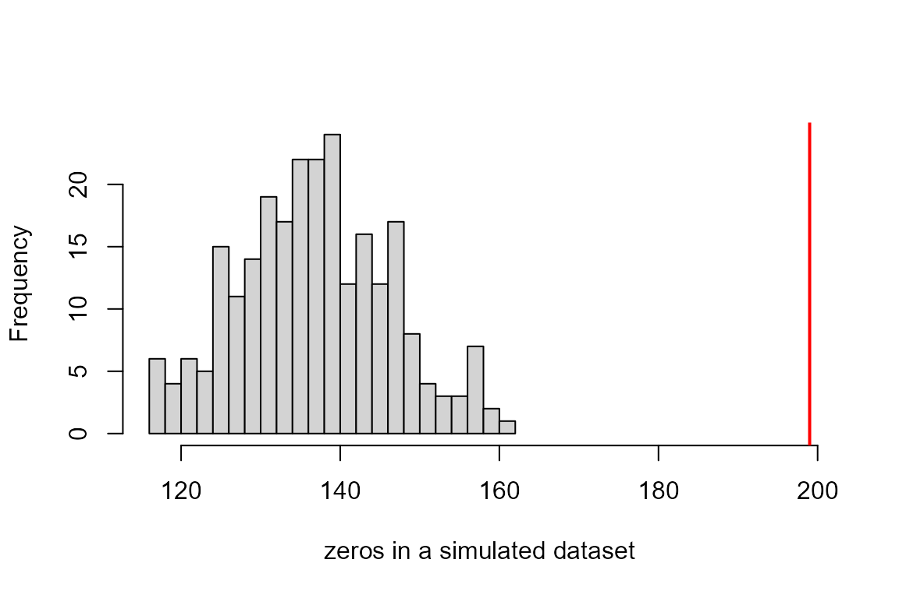
A zero-inflation flag on its own does not say whether the excess zeros come from a separate zero process or from overdispersion. Here the dispersion test flags the same fit, and the data were built without a zero process.
Posterior predictive check
pp_check() overlays the density of the observed response
on densities of replicated datasets, drawn with bayesplot. On the
misspecified fit the observed density carries counts up to 38, while the
replicate densities have almost no mass past 15.
pp_check(fit_od, type = "dens_overlay")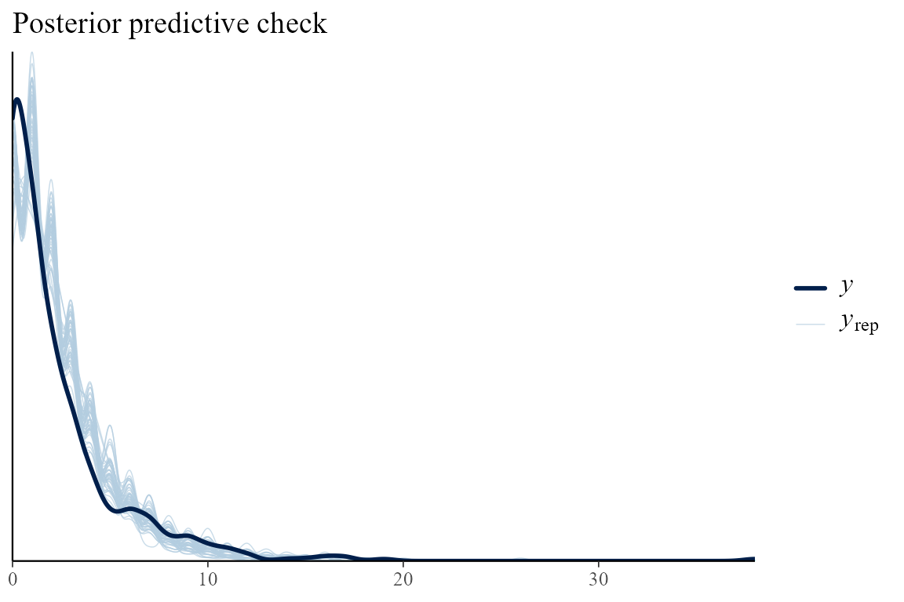
Fitting the overdispersed data correctly
Refit the overdispersed counts with a negative binomial likelihood.
The nested-Laplace path conditions on the dispersion phi
rather than estimating it, so pass the size the data were drawn
with.
fit_nb <- tulpa(y_od ~ x + spatial(region), data = d,
family = "neg_binomial_2", phi = 1.5,
spatial = sp, mode = "nested_laplace", control = ctl)
#> [nested-laplace] 1/9 cells (11%) | elapsed 0s | ETA >=0s | 0.00s/cells
#> [nested-laplace] 5/5 cells (100%) | elapsed 0s | ETA done | 0.00s/cells
test_dispersion(fit_nb)
#>
#> Simulation-based dispersion test
#>
#> data: fit_nb
#> dispersion ratio = 1.055, p-value = 0.744
#> alternative hypothesis: two.sided
test_uniformity(fit_nb)
#>
#> Asymptotic one-sample Kolmogorov-Smirnov test
#>
#> data: r
#> D = 0.025462, p-value = 0.8314
#> alternative hypothesis: two-sidedThe dispersion ratio drops to 1.03 (p = 0.79) and the PIT residuals pass the uniformity test (p = 0.85).
Spatial and temporal structure
residuals() on a tulpa fit is conditional by default: it
subtracts the fitted mean with every random effect and field the fit
estimated included. residuals(fit, effects = "population")
holds them at zero instead. Moran’s I of a non-spatial model’s residuals
asks whether a model without the field leaves spatial structure. Fit the
non-spatial model and test its residuals with moran_i(),
which uses inverse-distance weights on the coordinates by default.
fit0 <- tulpa(y ~ x, data = d, family = "poisson", mode = "laplace",
control = ctl)
moran_i(fit0, coords)
#>
#> Moran's I (inverse-distance weights)
#>
#> data: fit0
#> Moran's I = 0.085111, Expected I = -0.0016694, p-value < 2.2e-16
#> alternative hypothesis: two.sidedMoran’s I is 0.085 against an expectation of -0.0017 under no correlation (p below 2.2e-16): the residuals of neighbouring regions are positively correlated, so the covariate does not explain the regional pattern. The same call on the spatial fit asks whether the field has absorbed it.
moran_i(fit, coords)
#>
#> Moran's I (inverse-distance weights)
#>
#> data: fit
#> Moran's I = -0.00016144, Expected I = -0.0016694, p-value = 0.2749
#> alternative hypothesis: two.sidedOn the spatial fit’s residuals Moran’s I is -0.0002 (p = 0.27): the field has taken up the regional pattern.
The PIT residuals give the same check from the simulation side: they
come from simulate(), which draws the field. Transformed to
the normal scale with qnorm(), they can be passed to
moran_i() as a residual vector. An observation outside the
range of all 250 replicates has a PIT residual of exactly 0 or 1, which
qnorm() maps to an infinite value, so the residuals are
first kept half a replicate away from the ends.
eps <- 1 / (2 * 250)
z_pit <- qnorm(pmin(pmax(pit, eps), 1 - eps))
moran_i(z_pit, coords)
#>
#> Moran's I (inverse-distance weights)
#>
#> data: z_pit
#> Moran's I = -0.00062299, Expected I = -0.0016694, p-value = 0.4487
#> alternative hypothesis: two.sidedOn these residuals Moran’s I is -0.0006 (p = 0.46), the same reading.
An empirical semivariogram shows the same contrast as a function of
distance. tulpa_variogram() bins half the squared
differences of residual pairs by distance and returns a table with
columns dist, gamma and n_pairs;
a semivariance that rises with distance means nearby residuals are more
alike than distant ones.
vg0 <- tulpa_variogram(fit0, coords, n_bins = 8)
vg <- tulpa_variogram(z_pit, coords, n_bins = 8)
vg0
#> Empirical semivariogram: 7 distance bins
#> dist gamma n_pairs
#> 1 0.2209709 1.161531 4979
#> 3 1.1048543 1.243383 16760
#> 4 1.5467961 1.315485 14083
#> 5 1.9887378 1.536595 13293
#> 6 2.4306796 1.566810 22341
#> 7 2.8726213 1.867443 18717
#> 8 3.3145630 1.952336 16527plot() on one table draws it with point size scaled by
the pair count. To set the two side by side, plot the columns
directly.
plot(vg0$dist, vg0$gamma, type = "b", pch = 19,
ylim = range(0, vg0$gamma, vg$gamma, na.rm = TRUE),
xlab = "distance (grid cells)", ylab = "semivariance")
lines(vg$dist, vg$gamma, type = "b", pch = 17, col = "darkorange")
legend("bottomright", c("non-spatial fit", "spatial fit, PIT residuals"),
pch = c(19, 17), col = c("black", "darkorange"), bty = "n")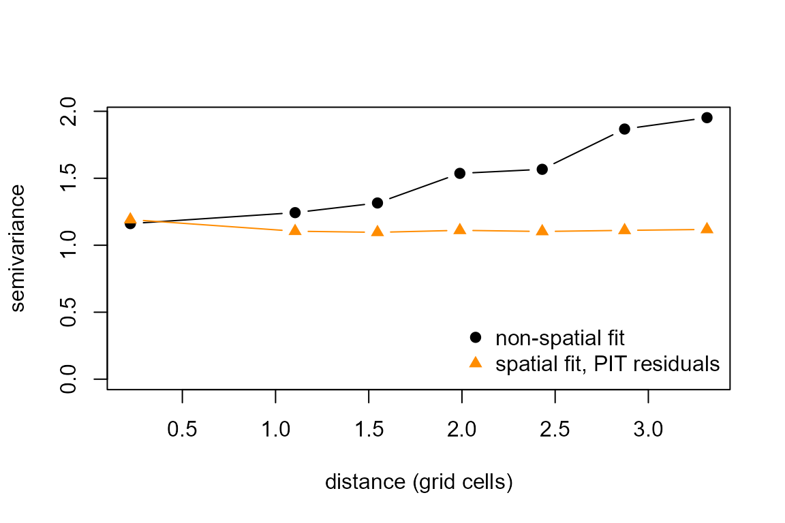
The semivariance of the non-spatial residuals rises from 1.16 within a region to 1.95 at three cells apart. The PIT residuals of the spatial fit stay level at about 1.1 over the same distances.
durbin_watson() is the temporal counterpart: it tests
first-order autocorrelation in residuals put in time order, here by
survey year. The statistic is near 2 when successive residuals are
uncorrelated, below 2 for positive and above 2 for negative
autocorrelation.
durbin_watson(z_pit, time = d$year)
#>
#> Durbin-Watson test for temporal autocorrelation
#>
#> data: z_pit
#> DW = 1.9831, lag-1 r = 0.0084594, p-value = 0.8358
#> alternative hypothesis: two.sidedThe year has no effect in the simulation, and the test finds no autocorrelation (DW = 1.98, p = 0.81). A trend over years that the model left out would push the statistic below 2; Temporal models shows how to add one.
Sampler diagnostics
The nested-Laplace fits above are deterministic and have no chains to
mix. A sampled fit, here the same model under mode = "hmc",
needs convergence checks before its estimates mean anything. Start with
a deliberately poor run: 400 iterations, 200 of them warmup, on 4
chains, with the step-size adaptation target adapt_delta
lowered from its default 0.8 to 0.3, which makes the sampler take steps
too large for the posterior.
fit_bad <- tulpa(y ~ x + spatial(region), data = d, family = "poisson",
spatial = sp, mode = "hmc",
control = list(n_iter = 400L, warmup = 200L,
n_chains = 4L, seed = 1L,
adapt_delta = 0.3))
#> Warning: tulpa(): the 'hmc' chain has not converged -- x: Rhat 1.20, bulk-ESS
#> 16; (Intercept): Rhat 1.20, bulk-ESS 38; log_tau_spatial: Rhat 1.23, bulk-ESS
#> 49. Its estimates and intervals are not yet the posterior. Run longer
#> (control$n_iter / control$warmup); see check_diagnostics().tulpa() already warns that the chains have not converged
and names the three worst main parameters. diagnostics() on
a chain fit returns the rank-normalised Rhat and the bulk and tail
effective sample sizes (ESS) of every parameter. Rhat compares the
variation within and between chains and is 1 when they agree; values
above 1.01 say the chains have not mixed.
check_diagnostics() applies the thresholds Rhat below 1.01
and bulk-ESS of at least 400 to the main parameters (the fixed effects
and the field precision) and also counts divergences.
dg_bad <- diagnostics(fit_bad)
head(dg_bad[order(-dg_bad$rhat), ], 5)
#> parameter rhat ess_bulk ess_tail
#> 34 phi_spatial[31] 1.440025 21.807830 7.977189
#> 16 phi_spatial[13] 1.425359 9.006118 6.191877
#> 31 phi_spatial[28] 1.379742 9.418220 11.287377
#> 15 phi_spatial[12] 1.307740 63.178889 40.117443
#> 18 phi_spatial[15] 1.298548 57.122124 10.471782
check_diagnostics(fit_bad)
#> Convergence warnings:
#> - 3 parameter(s) with Rhat > 1.01
#> - 3 parameter(s) with bulk-ESS < 400
#> - 99 divergent transition(s)The worst parameters are field values, with Rhat up to 1.44 and bulk-ESS between 9 and 63 from 800 post-warmup draws. All three main parameters fail both thresholds, and the run has 99 divergences.
A divergence is a trajectory along which the sampler’s energy error
blew up, and it marks a region of the posterior the sampler could not
follow. n_divergent() counts them. The energy Bayesian
fraction of missing information (E-BFMI) compares how far the energy
moves between iterations with its overall spread;
energy_bfmi() takes the per-iteration energies the sampler
records, and a chain below 0.3 explores poorly.
n_divergent(fit_bad)
#> [1] 99
round(energy_bfmi(fit_bad$energy, fit_bad$chain_id)$per_chain, 2)
#> 1 2 3 4
#> 1.16 1.08 1.15 0.95Every chain’s E-BFMI is above 0.3 (0.95 to 1.16), so this check does not flag the run: E-BFMI detects a sampler that cannot move between energy levels, which is not the failure here.
Three plots locate the problem. plot_rhat() and
plot_ess() colour each parameter by its Rhat and its ESS
against the thresholds.
plot_rhat(fit_bad)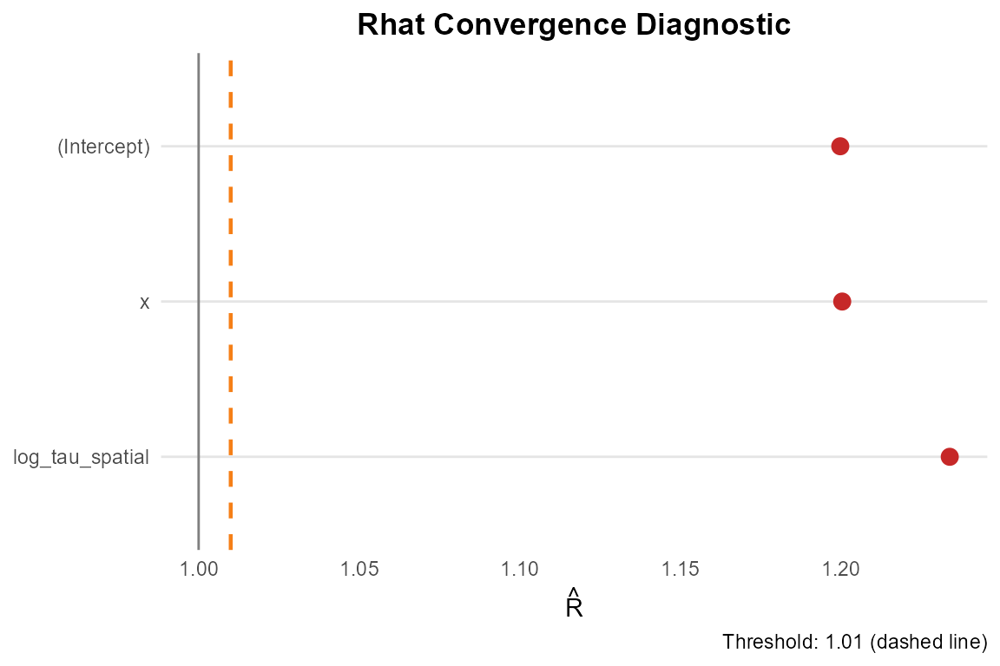
plot_ess(fit_bad)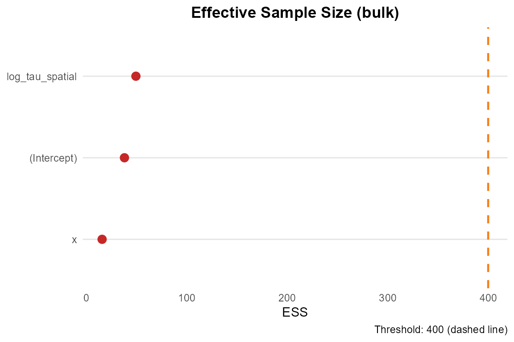
plot_acf() draws the autocorrelation of the worst-mixing
parameters by lag; a slow decay means successive draws carry little new
information.
plot_acf(fit_bad, n_pars = 4)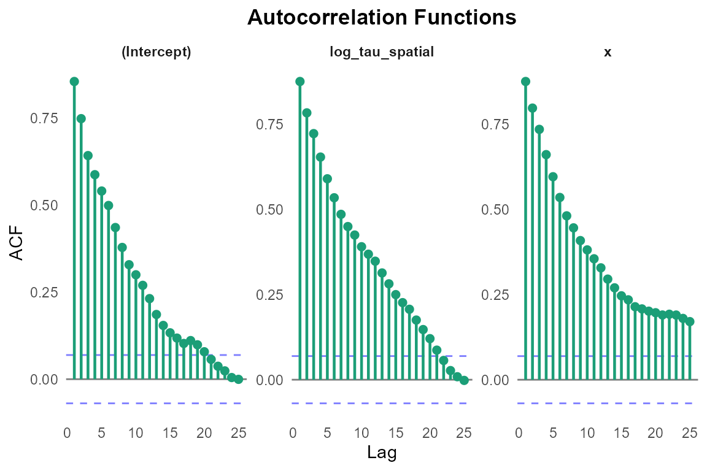
plot_divergences() draws the divergent iterations
against the others in parallel coordinates, each parameter scaled to (0,
1), so a cluster of divergences at one end of a parameter points to
where the posterior is hard to traverse. Here the divergent iterations
spread over the whole range of the field precision and both
coefficients.
plot_divergences(fit_bad)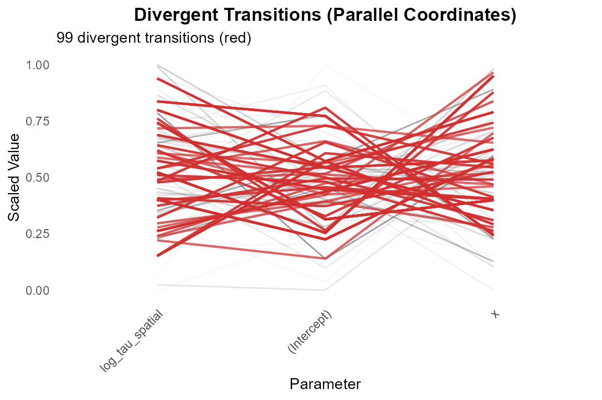
Rerun with the default adaptation and 2000 iterations per chain, 1000
of them warmup. The same checks now pass, and the slope reads 0.40.
plot_diagnostics() collects Rhat, ESS, a trace of the worst
parameter and the energy distribution in one figure.
fit_hmc <- tulpa(y ~ x + spatial(region), data = d, family = "poisson",
spatial = sp, mode = "hmc",
control = list(n_iter = 2000L, warmup = 1000L,
n_chains = 4L, seed = 1L))
check_diagnostics(fit_hmc)
#> Convergence checks passed (Rhat, bulk-ESS, divergences).
coef(fit_hmc)
#> (Intercept) x
#> 0.5149618 0.4031344
plot_diagnostics(fit_hmc)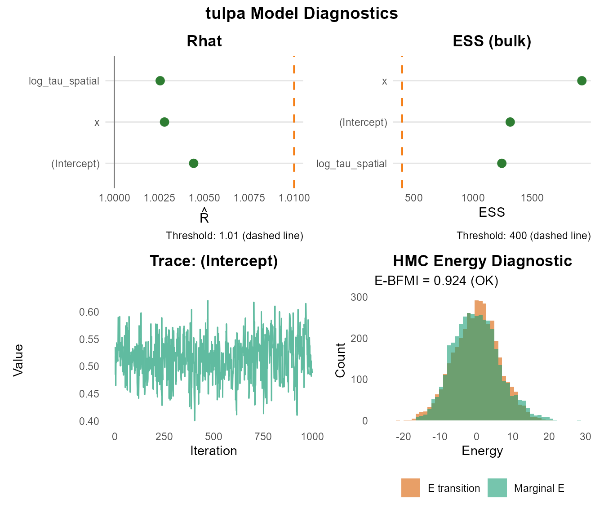
Approximation reliability
A nested-Laplace fit has no chains, and diagnostics()
returns a different table for it: whether the integration over the field
precision
worked. The headline is a Pareto-smoothed importance sampling (PSIS)
shape
that scores the integration grid against the exact marginal posterior of
;
below 0.5 is good, 0.5 to 0.7 usable, 0.7 or more unreliable. The table
also reports how many grid cells carry the weight.
diagnostics(fit)
#> Nested-Laplace WHOLE-FIT reliability (i.i.d. draws)
#> two layers: the outer hyperparameter-grid integration, and the inner
#> Gaussian Laplace on the latent field
#> outer PSIS pareto_k = -1.471 (good); IS-ESS = 443.5
#> proposal: grid_mixture; as the backend placed it, 0.783 (unreliable)
#> outer grid quadrature ESS = 3.78 of 14 cells (max weight 0.361)
#> hyperparameter integration contributes 0.0-4.2% of the fixed-effect marginal variance
#> inner Laplace max |gamma_3| = 0.008 (good), scored 2/2 latents
#> inner Laplace importance pareto_k = 0.223 (good), min IS efficiency 0.9999, scored 2/2 latents
#> the importance weights are uniform on every probed index: the inner
#> Gaussian reproduces the conditional posterior over the sampled region,
#> so the shape above describes no correction and is not banded
#> whole-fit verdict: reliable (both layers good)
#> per-parameter columns: none.
#> the fit carries no posterior draws, so the per-parameter mean / sd / per-parameter columns are empty; tulpa_posterior_draws(fit) samples the retained outer-grid mixture if a sample is wantedThe outer is in the good band, and the quadrature effective sample size of 3.84 over 12 grid cells says the weight is spread over several cells; a value near 1 would mean the grid had collapsed onto one. Reliability diagnostics explains each line of this table, what a collapsed grid means, and when to widen the grid or switch to a sampler.
Model comparison
Three models for the Poisson counts: the full model, the field
without the covariate, and the covariate without the field.
compare_models() ranks them by the expected log predictive
density (elpd), estimated either by the widely applicable information
criterion (WAIC) or by Pareto-smoothed leave-one-out cross-validation
(LOO). Higher elpd is better; delta is each model’s gap to
the best, and se_diff the standard error of that gap.
fit_nox <- tulpa(y ~ 1 + spatial(region), data = d, family = "poisson",
spatial = sp, mode = "nested_laplace", control = ctl)
#> [nested-laplace] 1/9 cells (11%) | elapsed 0s | ETA >=0s | 0.00s/cells
#> [nested-laplace] 5/5 cells (100%) | elapsed 0s | ETA done | 0.00s/cells
cmp_waic <- compare_models(full = fit, field_only = fit_nox,
covariate_only = fit0, criterion = "waic")
cmp_loo <- compare_models(full = fit, field_only = fit_nox,
covariate_only = fit0, criterion = "loo")
cols <- c("model", "elpd", "delta", "se_diff")
tab <- merge(cmp_waic[, cols], cmp_loo[, cols], by = "model",
suffixes = c("_waic", "_loo"), sort = FALSE)
tab[, -1] <- round(tab[, -1], 1)
tab
#> model elpd_waic delta_waic se_diff_waic elpd_loo delta_loo
#> 1 full -991.8 0.0 NA -992.1 0.0
#> 2 field_only -1104.2 -112.4 16.9 -1104.5 -112.4
#> 3 covariate_only -1192.2 -200.3 24.4 -1192.2 -200.1
#> se_diff_loo
#> 1 NA
#> 2 16.9
#> 3 24.4Both criteria rank the full model first. Dropping the covariate costs 112.4 elpd (standard error 16.9) and dropping the field 200.3 (standard error 24.4), each several standard errors away from zero. A gap within about two standard errors of zero would not separate the models.
Refit-based K-fold cross-validation, tulpa_kfold(),
refits the model on each training split. It refuses a spatial fit,
because dropping observations breaks the field’s structure, and names
PSIS-LOO as the alternative.
tulpa_kfold(fit, data = d, K = 5, seed = 1)
#> Error:
#> ! Refit-based K-fold is not supported for spatial / temporal-field fits: subsetting the observations breaks the field structure. Use tulpa_criteria() (PSIS-LOO) for those.On a fixed-effect fit it runs:
cv0 <- tulpa_kfold(fit0, data = d, K = 5, seed = 1)
c(elpd_kfold = cv0$elpd_kfold, se = cv0$se_elpd_kfold)
#> elpd_kfold se
#> -1193.00798 31.66153The 5-fold elpd of the covariate-only model, -1193.0, is within its standard error of 31.7 of the LOO estimate in the table, -1192.2.
Prior sensitivity
tulpa_powerscale_sensitivity() measures how much each
fixed-effect posterior moves when the prior or the likelihood is raised
to a power near 1 (Kallioinen et al. 2024). It reweights the existing
draws, so it needs no refit. A value above the threshold 0.05 flags
sensitivity; a flag on both the prior and the likelihood column reads as
prior-data conflict. The function accepts fixed-effect and GLMM fits and
refuses spatial ones, so the comparison runs on the covariate-only model
with two Gaussian priors on the coefficients: a wide one with standard
deviation 5, and a tight one with standard deviation 0.1 centred on
zero.
fit_wide <- tulpa(y ~ x, data = d, family = "poisson", mode = "laplace",
beta_prior = list(mean = 0, sd = 5), control = ctl)
tulpa_powerscale_sensitivity(fit_wide, prior = list(mean = 0, sd = 5))
#> variable prior hyperparameter likelihood diagnosis
#> 1 (Intercept) 9.675578e-05 NA 0.08192389 -
#> 2 x 2.279107e-05 NA 0.08493371 -Under the wide prior the prior sensitivity is below 1e-4 for both coefficients. The likelihood sensitivity of about 0.08 is above the threshold, which is what a likelihood that informs the posterior looks like, and with a quiet prior the diagnosis column stays empty.
fit_tight <- tulpa(y ~ x, data = d, family = "poisson", mode = "laplace",
beta_prior = list(mean = 0, sd = 0.1), control = ctl)
tulpa_powerscale_sensitivity(fit_tight, prior = list(mean = 0, sd = 0.1))
#> variable prior hyperparameter likelihood
#> 1 (Intercept) 0.22205237 NA 0.2660509
#> 2 x 0.06921835 NA 0.1359773
#> diagnosis
#> 1 potential prior-data conflict
#> 2 potential prior-data conflictUnder the tight prior both coefficients carry prior sensitivity above the threshold (0.22 for the intercept, 0.069 for the slope) together with high likelihood sensitivity, and both are diagnosed as prior-data conflict. The prior pulls toward zero while the data place the intercept near 0.68. The effect on the estimates:
rbind(wide = coef(fit_wide), tight = coef(fit_tight))
#> (Intercept) x
#> wide 0.6758473 0.4254309
#> tight 0.6300484 0.4134673
rbind(wide = confint(fit_wide)["x", ], tight = confint(fit_tight)["x", ])
#> 2.5 % 97.5 %
#> wide 0.3720698 0.4787919
#> tight 0.3610767 0.4658579The intercept moves from 0.68 to 0.63 and the slope from 0.425 to 0.413, with its 95% interval shifted from (0.372, 0.479) to (0.361, 0.466). With 600 observations the data still dominate the estimates, and the sensitivity check flags the conflict all the same.
Priors covers the prior arguments of each model component.
A diagnostic checklist
-
Simulate. Before the real data, fit the model to
data simulated from known parameters and check they come back
(
simulate()on a first fit gives realistic data to start from). -
Panel. Run
check_model()on the fit. A bent QQ plot or an observed variance outside the simulated ones points to the likelihood. -
Residual tests. Run
test_uniformity(),test_dispersion(),test_outliers()andtest_zero_inflation(), and look atpp_check(). Overdispersion usually trips the dispersion, uniformity and zero tests together; a negative binomial family is the first fix to try. -
Spatial structure. Run
moran_i()andtulpa_variogram()on the residuals of a model without the field to see whether one is needed, and on the spatial fit (orqnorm(pit_residuals(fit))) to see whether it absorbed the pattern. -
Temporal structure. Run
durbin_watson()withtime =set to the time variable whenever the data carry one. -
Inference. On a sampled fit,
check_diagnostics()must pass: Rhat below 1.01, bulk-ESS of at least 400, no divergences;plot_diagnostics()shows where it fails. On a nested-Laplace fit,diagnostics()must report a good outer and a grid that is not collapsed against an edge. -
Comparison. Rank the candidate models with
compare_models()under WAIC and LOO, and readdeltaagainstse_diff. -
Priors. Run
tulpa_powerscale_sensitivity()where the fit allows it, and refit with a wider prior wherever a coefficient is flagged.
See also
- Spatial models: the areal model used here, end to end.
- Reliability diagnostics: the approximation-reliability table in full.
- Model comparison: evidence, WAIC, LOO and model averaging in more depth.
- Simulation-based calibration: checking a backend’s calibration over many simulated datasets.
- Priors: prior specification for each component.